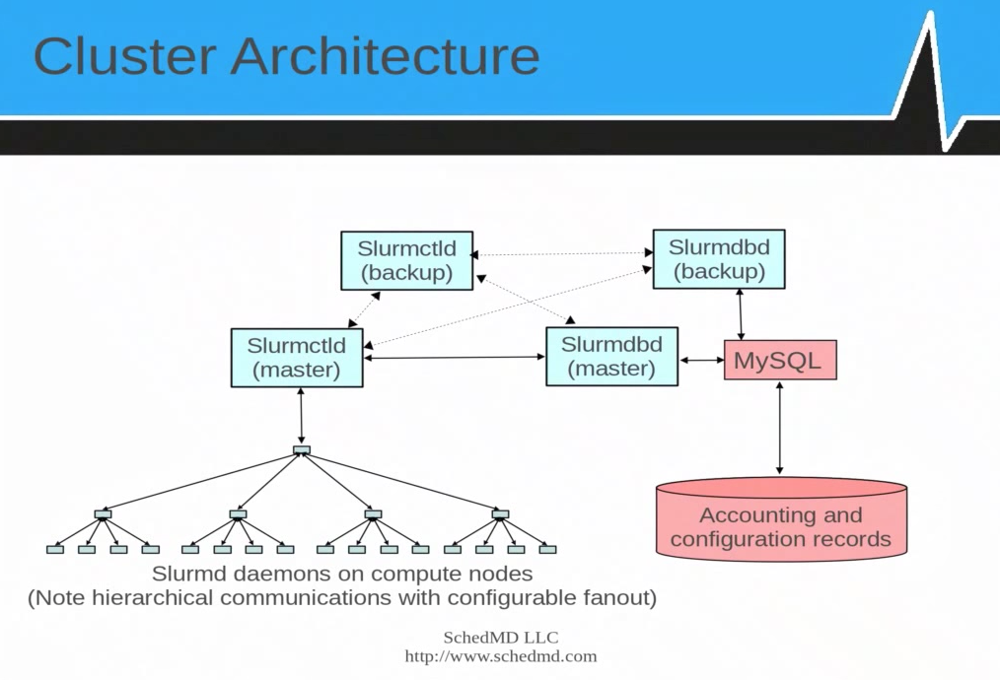
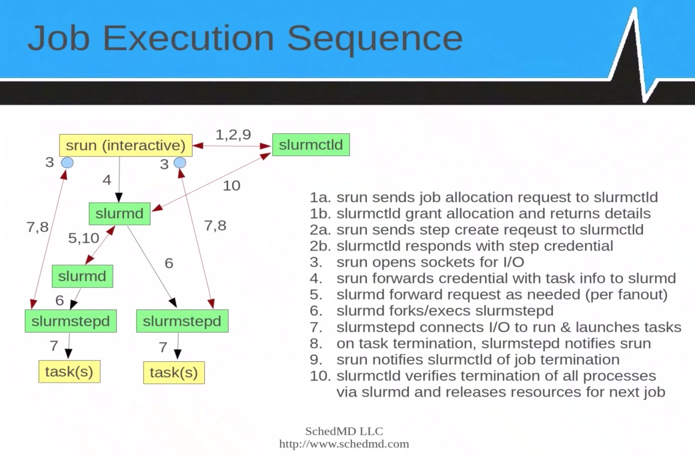
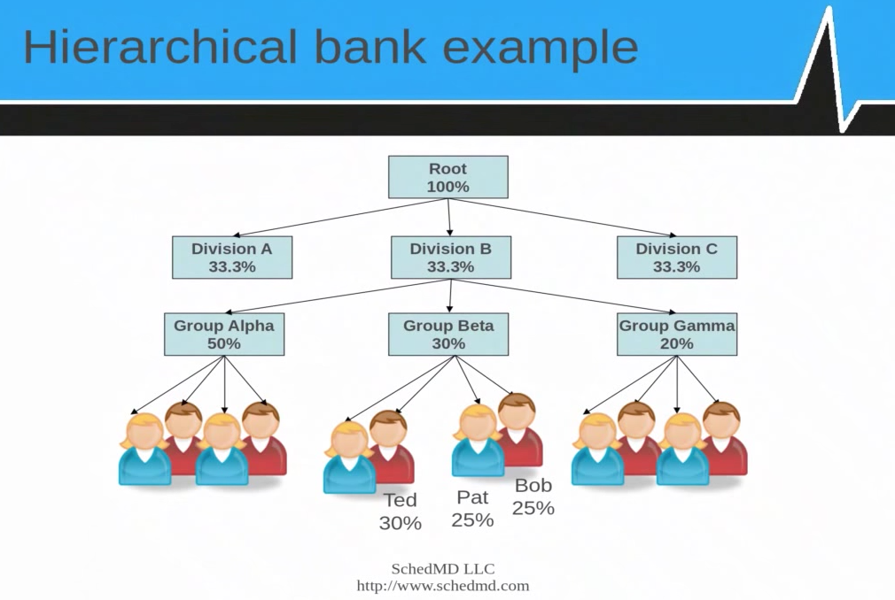

HPC Batching System
Batch processing for "loosely coupled" compute cluster. eg
LSF, PBS/TORQUE, SGE.
The traditional Supercomputer seems as rare as dinosours, and even supercomputing center run batch submission system like GE or SLURM or some such.
Cluster tends to refer to highly similar systems setup with intention of using it as a single system. Grid tends to cover a wider variety of system (eg workstation queues).
Note that instead of using a batch system, a number of tools exist to carry out embarrasingly parallel tasks of running the same program many times over and in parallel against a large number of input files:
Batch System 101
Think of old days mainframes where user submit job, it will run non-interactively, it will be processed and output collected at the end.
Sys admin has to worry about scheduling, fair sharing, etc. Things that OS used to do, now sys admin are exposed and may need to tweak them. Deja vu? Time to dig out that Operating System book from college :)
DanT Grid Engine for Dummies
HPC Batch system is increasingly adopting containers. For a feature comparison table of Shifter vs Singularity, and a list of relevant articles, see
Docker vs Singularity vs Shifter vs Univa Grid Engine Container Edition
Command Summary
Below is a quick comparison of commands between a couple of popular batch/queue management systems.
A "Rosetta Stone" of Batch/Queue systems on Unix/Linux :)
Task LSF PBS/Torque SGE SLURM
-------------------- -------------------- -------------------- -------------------- ------------
Job submission bsub qsub qsub sbatch
Job monitor bjobs qstat qstat -j JOBID squeue -j JOBID
qstat -u USERNAME squeue -u USERNAME
Job removal qdel scancel ?
Job control bstop qhold scontrol hold
bresume qrls scontrol release
bpeek sattach
interactive/Real time qrsh / qlogin srun (also salloc?)
Check nodes bhosts pbsnodes -a qhost / qstat -f sinfo -N / scontrol show nodes
lshosts
lsload
List avail queues qconf -sql scontrol show partition
Queue status bqueues qstat -q qstat -g c sinfo
Queue behaviour bparams scontrol show partition / smap
User accounting bacct sacct
config qconf scontrol
GUI qmon sview
Rosetta Stone of workload manager/scheduler commands (in pdf, cover PBS, Slurm, LSF, SGE, LoadLeveler)
SLURM
Slurm 101
SLURM = Simple Linux Utility for Resrouce Management. But it isn't so simple anymore and it is rebranded as "Slurm", like the drink in the simpsons :)
- No single point of failure. But redundant control daemon brings a lot of headaches.
- About 500k lines of C. API/Plug-ins in C, some have LUA interface.
- Open source + commercial support by SchedMD.
- Couple of items are Hierarchical: Node Daemons, User bank/account grouping (see diagram below).
- Associations are the basic roles that govern who can run jobs where.
- Nodes are grouped into Partitions (essentially queues in other schedulers).
- User belongs to one (or more) accounts.
- QoS (Quality of Service) govern how much of a given resource an account can use at a time.
- Job step refers to individual job of a task array.
Job Submission
sbatch myscript # submit script to run in batch mode
salloc # run interactive job, asking scheduler to allocate certain resources to it
salloc bash # get a bash shell in intertive mode with req resource
srun # Typically for MPI job, create job allocation, launch job step.
srun uname # run the uname command in a cluster using srun
sattach # connect to the stdin, stdout and stderr of a job or job step
Options commont to most/all job submission commands:
sbatch/salloc/srun
--ntasks=100 # number of tasks to 100 (ie array job)
--nodes=x --ntasks-per-node=y # less recommended way to run large MPI job
--time=10 # time limit in minutes (actual cpu run time?) , per task?? (help scheduler do backfill)
--depend=JOBID # job dependency, like qhold until a parent job has finished before starting this.
--account NAME # which account to use for the job
--qos NAME # what QoS to run (may affect cost, preemption, etc)
--label # prepend output with task number
--nnodes=2 # req 2 nodes for this job
--exclusive # have exclusive use of node when running
--multi-prog slurmjob.conf # run a job where diff task run diff prog, as specified in a config file given in the arg
# taskID starts with 0
# %t = task ID
# %o = offset within task ID range
What/Where
Often time, a number of parameters are required to submit jobs.
eg,
what account I am in? what partitions are there? What QoS are there?
sacctmgr show assoc user=USERNAME format=acc,part,qos # list account, partition, QoS for the specified USERNAME
sacctmgr show associations -p user=USERNAME # see what associations a specified user has been granted, -p = "parsable"
sacctmgr show qos format=name # list QoS
scontrol show partition # list "queues"
Job Control
scancel # send signal to cancel job or job steps (individual task array job)
JOBID # cancel a job (if task array, ??all job steps)
JOBID.TASKID # cancel only specific job step
--user=USERNAME --state=pending # kill all pending jobs for named user
sbcast # "broadcast": xfer file to compute nodes running the job, using hierarchical communication
# may or may not be faster than a shared FS.
sqeueue --start -j JobID # scheduler return estimate of when job would start running
# may return N/A when --time not specified for other jobs
srun_cr # run with BSD checkpoint/restart
strigger # run arbitrary script in response to system events, eg node dies, daemon stops, job reaches time limit, etc
# persistent triggers will remain after event occurs
-c ? # create trigger
--destroy
--list # list triggers ?
System Info
sinfo # status of node, queue, etc
--Node # output info in node-centric view (group similar nodes together)
-p PARTITION # info on specific partition (queue)
--long # add info on memory, tmp, reason, etc
squeue # status of job and job steps
-s # info about job steps
-u USERNAME # job info of specified user
-t all # all state (but only recent job only, historical info in accounting rec only)
-i60 # iterate output every 60 sec
smap # topology view of system, job and job steps. (new tool that combine sinfo and squeue data)
sview # new GUI: view + update on sys, job, step, partition, reservation, topology
scontrol # admin cli: view + update on sys, job, partition, reservation
# dump all info out, not partituclarly user friendly
scontrol show reservations # see job/resource reservations
scontrol show partition # view partition/queue info
scontrol show config # view config of whole system (eg when asking mailing list for help)
scontrol update PartitionName=debug MaxTime=60 # change the MaxTime limit to 60 min for the queue named "debug"
sacct # view accounting by individual job and job steps
sacct -j 11200077 # info about specific job
sacct -j 11200077 --long -p # long view, pipe seprated columns
# --long ignores --format
sacct --helpformat # list fields that can be displayed
# PD = PENDING, see what resources has been requested
sacct -u USERNAME -s PD -p --format jobid,jobname,acc,qos,state,Timelimit,ReqCPUS,ReqNodes,ReqMem,ReqGRES,ReqTres
# timelimit will give idea how long job will run
sacct -s running -r QNAME --format jobid,timelimit,start,elapsed,state,user,acc,jobname
# when will a job start
sacct -u USERNAME --partition QNAME --format jobid,jobname,acc,qos,state,DerivedExitCode,Eligible,Start,Elapsed,Timelimit
# NNodes = Allocated or Requested Nodes, depending on job state
sacct -u USERNAME -r QNAME -p --format jobid,jobname,acc,qos,state,AllocNodes,AllocTRES,Elapsed,Timelimit,NNodes
# no data on these max ...
sacct -X -r QNAME -o jobid,User,Acc,qos,state,MaxDiskWriteNode,MaxVMSize,MaxDiskReadNode,MaxPagesNode,MaxDiskWriteTask
# example of querying jobs ran in a certain time frame:
sacct -p -X -a -r lr5 -o job,start,end,partition,user,account,jobname,AllocNode,AllocTRES,DerivedExitCode,state --start=2017-12-20T00:00:00 --end=2018-01-01T23:59:59
# all users, failure states, in a certain time frame (hung job not listed here):
sacct -a -X -s F,NF -r lr5 -S 2017-12-16 -E 2017-12-18
# many problem states (but may not be comprehensive)
sacct -a -X -s F,NF,CA,S,PR,TO,BF -r lr5 -o job,start,end,partition,user,account,jobname,AllocNode,AllocTRES,NNodes,DerivedExitCode,state -S 2017-12-25 -E 2017-12-31
# Node Failure, job would have died:
sacct -a -X -s NF -r lr5 -o job,start,end,partition,user,jobname,AllocNode,AllocTRES,DerivedExitCode,state,CPUTime,Elapsed -S 2017-12-20 -E 2018-01-01
sstat -j # on currently running job/job step (more info avail than sacct which is historical)
sreport # usabe by cluster, partition, user, account
# present info in more condensed fashion
-u USERNAME
-p PARTITIONNAME
sprio # view job PRIOrity and how factors were weighted
sshare # view fair-SHARE info in hierarchical order
sdiag # stat and scheduling info (exec time, queue length). SLURM 2.4+
Env Var
SLURM will read environment variables to help it determin behavior.
CLI argument(s) will overwrite env var definitions.
SQUEUE_STATE=all # tell squeue cmd to display job in all state (incl COMPLETED, CANCELLED)
SBATCH_PARTITION=default_q # specify the given partition as the default queue
SLURM Troubleshooting
State with * (eg idle*, draining*) means node is not reachable.
- /var/log/slurm/slurmctld.log # master scheduler log
- /var/log/slurm/slurmd.log # per node local daemon log
sacctmgr show associations # list all associations. think of them as acl.
# it is the union of all entities in each association entry that govern if user X has access to resource Y (nodes operating under certain qos)
sacctmgr show associations -p user=sn # association for specified user
# -p use | to separate columns, reduce space usage.
sacctmgr show qos # show all avail Quality of Service entitites
squeue # full detail of current job queue (all user, all jobs, on all partitions/queues)
squeue -p stanium # queue for names partition
# State: (R)unning, PenDing.
# Reason: Resource = waiting for resource eg free node
# Priority = other higher priority job are scheduled ahead of this job
sinfo -t I # list staTe Idle nodes
sinfo -t I -p stanium # Idle nodes in stanium partition
squeue --start # estimated start time of each queued job
# N/A if time cannot be estimated (eg non time bound jobs exist)
scontrol show reservation # show reservations
# reservation are typically maintenance window placed by admins
# but sys admin can also reserve to let user then run certain jobs in the reservation window.
# jobs will not start in such reservation window
# running job will NOT be killed by slurm if run into the reservation
# listed user of the reservation can submit job that is flagged to use the reservation
scontrol create reservation starttim=2017-12-27T16:15 duration=60 user=tin flags=maint nodes=n0142.lr5,n0143.lr5 reservation=rn_666
# create reservation, admin priv may be req
# duration is number of minutes
# reservation=rn_666 is optional param to give reservation a name,
# if not specified, slurm will generate a name for it
scontrol delete reservation=rn_666
sbatch --reservation=rn_666 ... # submit a job run under reservation
Slurm Admin stuff
Managing node state
sinfo -R # see what nodes are down
scontrol update nodename=n0001.savio1,n0002.savio2 state=down reason="bad ib" # manually down a node
scontrol update nodename=n0001.savio1,n0002.savio2 state=resume # revive a node
Managing user association
sacctmgr add = sacctmgr create
sacctmgr list = sacctmgr show
# "create association" is
# really updating user entry, adding parition it can use, qos, etc
sacctmgr add user tin Account=scs Partition=alice0
MPI job in slurm
See
schedmd mpi_guide.html
Some use mpirun, other use SLURM env var to see what resource are allocated to the job.
Slurm Daemons

slurmctld # cluster daemon, one per cluster., optional backup daemon for HA
# manage resource and job queue
slurmd # node daemon, one per compute node
# launch and manage task
# optionally, the node daemon can use hierarchical tree (multi-levels), where
# leaf nodes does not connect directly to slurmctld, for better scalability.
slurm*d -c # clear previous state, purge all job, step, partition state
-D # NOT daemon mode, logs written to console
-v # verbose
-vvv # very very verbose
??
-p debug # partition debug
slurmd -C # print node config (number of cpu, mem, disk space) and exit
# output can be fed into slurm config file
slurmstepd # slurm daemon to shepherd a job step
# when job step finishes, this process terminates
slurmDBD # slurm db daemon, interface with slurm admin tools and MySQL.
mysqld # db hosting accounting and limit info, jobs, etc.
Add slurm/install_linux/bin to PATH.
For testing, open several window and run the daemons with -Dcvv arguments. Each addtional -v would about double the log messages.

SLURM DB
DB powering slurm settings is quite complex, but very powerful. Also keep user accounting info.
sacctmgr # add/delete clusters, account, user
# get/set resource limit, fair-share, max job count, max job size, QoS, etc
# based on hierarchical banks
# Many slurm db update done via this cmd
# updates pushed out live to slurmd (or slurmctld?)
# hierarchical banks: Division, each with diff groups, which in term has its own set of users.

Admin Config
- Install RPM to all nodes
- Must configure node grouping in partition
- Most other config param has usable defaults
- Web GUI tool in doc/html/configurator.html
- Use Google MUNGE for authentication. Each node need to have MUNGE auth key configured, need a munge daemon running on each node.
- testsuite/expect has ~300 test programs to validate installation. edit globals.local to select/config tests.
slurm/install_linux/etc/slurm.conf has default template that is almost usable.
DB and accounting not configured in this default template
Need to change 2 user name and HOSTNAME. User is typically root, but in test, could use personal account.
see slurm.conf man page for details
ControlMachine # use output from hostname -s
NodeName # in node spec section
Nodes # in partition spec section
SlurmUser # slurmctld user. use output from id -un
slurmdUser # slurmd user.
...
SLURM Ref
SGE/UGE
SGE = Sun Grid Engine. Son of a Grid Engine
OGE = Open Grid Engine. And NOT Oracle GE !! They eventually sold all GE stuff to Univa anyway.
UGE = Univa Grid Engine.
GE = Grid Engine.
User Howto
Find out what queue is avail:
qconf -sql
Submit a job to a specific queue:
qsub sge-script.sh -q 10GBe.q # eg run only in a queue named for nodes with 10 gigE NIC
qlogin -q interactive.q # often an interactive queue may have more relaxed load avg req than same host on default.q or all.q
# but limited slots to avoid heavy processing in them
# yet granting a prompt for lightweight testing env use even when cluster is fully busy
qsub -R y -pe smp 8 ./sge-script.sh # -R y : Reservation yes... avoid starvation in busy cluster
# -pe smp 8 : req run with a Physical Env of 8 core (smp)
qrsh
### examples of qsub with request for extra resources ###
# Find out pe env, eg smp, mpi, orte (openmpi, most widely used mpi)
qconf -spl
# Describe detail of a pe env:
qconf -sp mpi
qconf -sp smp
# Submit a job to a queue with certain cores numbers
qsub sge-script.sh -pe smp 8 # this req 8 core from machine providing smp parallel env.
qsub sge-script.sh -q default.q@compute-4-1 # submit to a specific, named node/host. also see -l h=...
# an example that takes lot of parameters
# -l h_rt specifies hard limit stop for the job (for scheduler to know what's ceiling time of run job)
# -l m_mem_free specifies free memory on node where job can be run.
# seems to be mem per core, so if specify 8GB and -pe smp 8, then it would need a systemwith 64GB free RAM
# -pe smp 8 specify to use the symetric multiprocessing processing Parallel Environment, 8 cores
# -binding linear:8 is to allow multiple threads of the process to use multiple cores (some uge or cgroup config seems to default bind to single core even when pe smp 8 is specified.
# incidentally, load average counts runnable jobs. so even if 6 threads are bound to a single core,
# load avg maybe at 6 but most other core sits idle as visible by htop.
qsbu -M me@example.com -m abe -cwd -V -r y -b y -l h_rt=86400,m_mem_free=6G -pe smp 8 -binding linear:8 -q default.q -N jobTitle binaryCmd -a -b -c input.file
# Find out what host group are avail, eg host maybe grouped by cpu cores , memory amount.
qconf -shgrpl
# Find out which specific nodes are in a given host group:
qconf -shgrp @hex
qsub sge-script.sh -q default.q@@hex # @@groupname submits to a group, and the group can be defined to be number of cores. not recommended.
# Change the queue a job is in, thereby altering where subsequent job is run (eg in array job)
qalter jobid -q default.q@@hex
Basic User Commands
qsub sge-script.sh # submit job (must be a script)
# std out and err will be captured to files named after JOBid.
# default dir is $HOME, unless -cwd is used.
qsub -cwd -o ./sge.out -e ./sge.err myscript.sh
# -cwd = use current working dir (eg when $HOME not usable on some node)
# -o and -e will append to files if they already exist.
qsub -S /bin/bash # tell SGE/qsub to parse the script file using specifed SHELL
-q queue-name # submit the job to the named queue.
# eg default@@10gb would seelct default queue, with 10gb (complex) resource available
-r y # resume job (yes/no). Typically when a job exit with non-zero exit code, rerun the job.
-R y # use Reservation. useful in busy cluster and req > 1 core.
# hog system till all cores become avail.
# less likely to get starvation, but less efficient.
-N job-name # specify a name for the job, visible in qstat, output filename, etc. not too important.
-pe smp 4 # request 4 cpu cores for the job
-binding linear:4 # when core binding is defaulted to on, this allow smp process to be able to use the desired number of core
-l ... # specify resources shown in qconf -sc
-l h_rt=3600 # hard time limit of 3600 seconds (after that process get a kill -9)
-l m_mem_free=4GB # ask for node with 4GB of free memory.
# if also req smp, memory req is per cpu core
qsub -t 1-5 # create array job with task id ranging from 1 to 5.
# note: all parameters of qsub can be placed in script
# eg, place #$ -t 1-5 in script rather than specify it in qsub command line
qstat
-j # show overall scheduler info
-j JOBID # status of a job. There is a brief entry about possible errors.
-u USERNAME # list of all pending jobs for the specified user
-u \* # list all jobs from all users
-ext # extended overview list, show cpu/mem usage
-g c # queues and their load summary
-pri # priority details of queues
-urg # urgency details
-explain A # eshow reason for Alarm (also E(rror), c(onfig), a(larm) state)
-s r # list running jobs
-s p # list pending jobs
Reduce the priority of a job:
qalter JOBID -p -500
# -ve values is DEcrease priority, lowest is -1024
# +ve is INcrease priority, only admin can do this. max is 1024
# It really just affect pending jobs (eg state in qw). won't preempt running jobs.
qmod -u USERNAME -p -100
# DEcrease job priority of all jobs for the specified user
# (those that have been qsub, not future jobs)
qdel JOBID # remove the specified job
qdel -f JOBID # forcefully delete a job, for those that sometime get stuck in "dr" state and qdel returns "job already in deletion"
# would likely need to go to node hosting job and remove $execd_spool_dir/.../active_jobs/JOBID
# else may see lot of complains about zombie job in qmaster message file
Job STATE abbreviations
They are in output of qstat
E = Error
qw = queued waiting
r = running
dr = running, died (eg, host no longer responding)
s =
t = terminating? jobs that exceeded threashold of h_rt, but somehow sge_execd had problem contecting with scheduler, had resulted in this.
ts = ??
h = hold (eg qhold, or job depency tree to hold)
qstat -f shows host info. last column (6) is state, and when in problem, has things like au or E on it.
au state means alarm, unreachable. typically host is transiently down or SGE_execd is not running.
clearable automatically when sge can talk to the node again.
E is hard Error state, and even with reboot, will not go away.
qmod -cq default.q@HOSTNAME # clear Error state, do this after sys admin knows problem has been addressed.
qmod -e default.q@HOSTNAME # enable node, ie, remove the disabled state. should go away automatically if reboot is clean.
Here is a quick way to list hosts in au and/or E state:
qstat -f | grep au$ # will get most of the nodes with alarm state, but misses adu, auE...
qstat -f | awk '$6 ~ /[a-zA-Z]/ {print $0}' # some host have error state in column 6, display only such host
qstat -f | awk '$6 ~ /[a-zA-Z]/ && $1 ~ /default.q@compute/ {print $0}' # add an additional test for nodes in a specific queue
alias qchk="qstat -f | awk '\$6 ~ /[a-zA-Z]/ {print \$0}'" # this escape seq works for alias
alias qchk="qstat -f | awk '\$6 ~ /[a-zA-Z]/ && \$1 ~ /default.q@/ {print \$0}'" # this works too
(o state for host: when hosts is removed from @allhosts and no longer allocatable in any queue)
Basic+ User Commands
qmon # GUI mon
qsub -q default.q@compute-4-1 $SGE_ROOT/examples/jobs/sleeper.sh 120
# run job on a specific host/node, using SGE example script that sleeps for 120 sec.
qsub -l h=compute-5-16 $SGE_ROOT/examples/jobs/sleeper.sh 120
# run job on a specific host/node, alt format
qsub -l h=compute-[567]-* $SGE_ROOT/examples/jobs/sleeper.sh 120
# run on a set of node. Not truly recommended, using some resource or hostgroup would be better.
qconf
-sc # show complex eg license, load_avg
-ss # see which machine is listed as submit host
-sel # show execution hosts
-sql # see list of queues (but more useful to do qstat -g c)
qhost # see list of hosts (those that can run jobs)
# their arch, state, etc info also
-F # Full details
qhost -F -h compute-7-1 # Full detail of a specific node, include topology, slot limit, etc.
qstat -f
qstat -f # show host state (contrast with qhost)
# column 6 contain state info. Abbreviation used (not readily in man page):
# upper case = perpanent error state
a Load threshold alarm
o Orphaned
A Suspend threshold alarm
C Suspended by calendar
D Disabled by calendar
c Configuration ambiguous
d Disabled
s Suspended
u Unknown
E Error
qstat -f | grep d$ # disabled node, though some time appear as adu
qstat -f | awk '$6~/[cdsuE]/ && $3!~/^[0]/'
# node with problematic state and job running (indicated in column 3)
Sample submit script
#!/bin/bash
#$ -S /bin/bash
#$ -cwd
#$ -N sge-job-name
#$ -e ./testdir/sge.err.txt
#$ -m beas
#$ -M tin@grumpyxmas.com
### #$ -q short_jobs.q
### -m define when email is send: (b)egin, (e)nd, (a)bort, (s)uspend
### -M tin@grumpyxmas.com work after specifiying -m, (w/o -m don't send mail at all)
### if don't specify -M, then email will be send to username@mycluster.local
### such address will work if mailer supports it
### (eg postfix's recipeint-canonical has mapping for
### @mycluster.local @mycompany.com
## bash commands for SGE script:
echo "hostname is:"
hostname
This is a good ref for sge task array job:
http://talby.rcs.manchester.ac.uk/~ri/_linux_and_hpc_lib/sge_array.html
#!/bin/bash
#$ -t 1-100
# -t will create a task array, in this eg, element 1 to 100, inclusive
# The following example extract one line out of a text file, line numbered according to SGE task array element number
# and pass that single line as input to a program to process it:
INFILE=`awk "NR==$SGE_TASK_ID" my_file_list.text`
# instead of awk, can use sed: sed -n "${SGE_TASK_ID}p" my_file_list.text
./myprog < $INFILE
#
# these variables are usable inside the task array job:
# $SGE_TASK_ID
# $SGE_TASK_FIRST
# $SGE_TASK_LAST
# $SGE_TASK_STEPSIZE, eg in 1-100:20, which produces 5 qsubs with 20 elements each
#
# JOB_ID
# JOB_NAME
# SGE_STDOUT_PATH
#
For other variables available inside an SGE script, see the
qsub man page
#!/bin/bash
#$ -V # inherite user's shell env variable (eg PATH, LD_LIBRARY_PATH, etc)
#$ -j y # yes to combine std out and std err
Admin Commands
qalter ... # modify a job
qalter -clear ... # reset all elements of job to initial defaul status...
qmod -cj JOBID # clear an error that is holding a job from progressing
qhold JOBID # place a job on hold (aka qalter -hold_jid JOBID)
# for qw job, hold prevents it from becomming to r state
# for running job, probably equiv of kill -suspend to the process. free up cpu, but not memory or licenses.
qrls -hn JOBID # release a job that is on hold (ie resume)
qacct -j JOBID # accounting info for jobs
qacct -j # see all jobs that SGE processed, all historical data
qacct -o USERNAME # see summary of CPU time user's job has taken
qrsh -l mem_total=32G -l arch=x86 -q interactive # obtain an interative shell on a node of specified char
qconf # SGE config
-s... # show subcommand set
-a... # add subcommand set
-d... # delete
-m... # modify
qconf -sq [QueueName] # show how the queue is defined (s_rt, h_rt are soft/hard time limit on how long jobs can run).
qconf -sc # show complexes
qconf -spl # show pe
qconf -sel # list nodes in the grid
qconf -se HOSTNAME # see node detail
qconf -sconf # SGE conf
qconf -ssconf # scheduler conf
qconf -shgrpl # list all groups
qconf -shgrp @allhosts # list nodes in the named group "@allhosts"
-shgrp_tree grp # list nodes one per line
qconf -su site-local # see who is in the group "site-local"
qconf -au site-local sn # add user sn to the group called "site-local"
qconf -sq highpri.q # see characteristics of the high priority queue, eg which group alloed to submit job to it.
# hipri adds urgency of 1000
# express pri adds urgency of 2000
# each urgency of 1000 adds a 0.1 to the priority value shown in qstat.
# default job is 0.5, hipri job would be 0.6
qconf -spl # show PE env
qconf -sconf # show global config
qconf -ssconf # show scheduler config (eg load sharing weight, etc)
Enable fair sharing (default in GE 6.0 Enterprise):
qconf -mconf # global GE config
enforce_user auto
auto_user_fshare 100
qconf -msconf # scheduler config
weight_tickets_functional 10000
# fair share only schedule job within its 0.x level
# each urgency of 1000 add 0.1 to the priority value,
# thus a high priority job will be be affected by fair share of default job.
# any 0.6xx level job will run to completion before any 0.5xx job will be scheduled to run.
# eg use, can declare project priority so any job submitted with the project code will get higher priority and not be penalized by previous run and fair share...
qconf -tsm # show scheduler info with explanation of historical usage weight
# very useful in share-tree scheduling
# (which reduce priority based on historical half-life usage of the cluster of a given user)
# straight forward functional share ignore history (less explaining to user)
# It is a single-time run when the scheduler next execution
# log should be stored in $sge_root/$cell/common/schedd_runlog
qping ...
tentakel "ping -c 1 192.168.1.1"
# run ping aginast head node IP on all nodes (setup by ROCKS)
Disabling an Execution Host
Method 1
If you're running 6.1 or better, here's the best way.
- Create a new hostgroup called @disabled (qconf -ahgrp @disabled).
- Create a new resource quota set via "qconf -arqs limit hosts @disabled to slots=0" (check with qconf -srqs).
- Now, to disable a host, just add it to the host group (
qconf -aattr hostgroup hostlist compute-1-16 @disabled ).
- To reenable the host, remove it from the host group (
qconf -dattr hostgroup hostlist compute-1-16 @disabled ).
- Alternatively, can update disabled hosts by doing qconf -mhgrp @disabled, placing NONE in the hostlist when there are no more nodes in this disabled hostgroup.
This process will stop new jobs from being scheduled to the machine and allow the currently running jobs to complete.
- To see which nodes are in this disabled host group:
qconf -shgrp @disabled
- The disabled hosts rqs can be checked as
qconf -srqs and should looks like
{
name disabled_hosts
description "Disabled Hosts via slots=0"
enabled TRUE
limit hosts {@disabled} to slots=0
}
Ref:
http://superuser.com/questions/218072/how-do-i-temporarily-take-a-node-out-from-sge-sun-grid-engine
Method 2
qmod -d \*@worker-1-16 # disable node compute-1-1 from accepting new jobs in the any/all queues.
qmod -d all.q@worker-1-16 # disable node compute-1-1 from accepting new jobs in the all.q queue.
qmod -d worker-1-16 # disable node compute-1-1, current job finish, no new job can be assigned.
qstat -j # can check if nodes is disabled or full from scheduler consideration
qstat -f # show host status.
qstat -f | grep d$ # look for disabled node (after reboot, even if crashed by memory, sge/uge disable node)
qmod -e all.q@worker-1-16 # re-enable node
qmod -cq default.q@worker-5-4 # remove the "E" state of the node.
Method 3
This will remove the host right away, probably killing jobs running on it.
Thus, use only when host is idle.
But it should be the surest way to remove the node.
qconf -de compute-1-16 # -de = disable execution host (kill running jobs!)
qconf -ae compute-1-16 # re-add it when maintenance is done.
Pausing queue
pausing the queue means all existing jobs will continue to run, but jobs qsub after queue is disabled will just get queued up until it is re-enabled. ref: http://www.rocksclusters.org/roll-documentation/sge/4.2.1/managing-queues.html
qmod -d default.q # this actually place every node serving the queue in "d" state. check with qstat -f
qmod -e default.q
Admin howto
Add Submit Host
See all exec node in cluster:
qconf -sel
Add submit host:
qconf -as hostname
# note that execution and submit host reverse IP to DNS must lookup and match
# workstations can be submit host, they will not be running sgeexecd.
# submit host don't need special software, but would need qsub to submit.
# though often, sge client package is installed
# /etc/profile.d/settings.*sh will be added for configurations. minimally:
# SGE_CLUSTER_NAME=sge1
# SGE_QMASTER_PORT=6444
# optional?:
# SGE_CELL=default
# SGE_EXECD_PORT=6445
# SGE_ROOT=/cm/shared/apps/sge/current
# submit host need to know who the master is.
# ie /etc/hosts need entry for the cluster head node external IP
Add Execution Host (ie compute node)
Add an execution host to the system, modeled after an existing node:
qconf -ae TemplateHostName
# the TemplateHostName is an existing node which the new addition will be model after (get their complex config, etc)
# command will open in vi window. change name to new hostname, edit whatever complex etc. save and exit.
qconf -Ae node-config.txt
# -A means add node according to the spec from a file
# the format of the file can be the cut-n-paste from what the vi window have when doing qconf -ae
example of node-config.txt ::
hostname node-9-16.cm.cluster
load_scaling NONE
complex_values m_mem_free=98291.000000M,m_mem_free_n0=49152.000000M, \
m_mem_free_n1=49139.093750M,ngpus=0,slots=40
user_lists NONE
xuser_lists NONE
projects NONE
xprojects NONE
usage_scaling NONE
report_variables NONE
## above is cut-n-paste of qconf -ae node-1-1 + edit
## add as qconf -Ae node-config.txt
A way to script adding a bunch of nodes at the same time. create a shell script with the following, and run it:
(fix slots to match the number of cpu cores you have. Memory should be fixed by UGE.
for X in $(seq 1 16 ) ; do
echo "
hostname compute-2-$X
load_scaling NONE
complex_values m_mem_free=98291.000000M,m_mem_free_n0=49152.000000M, \
m_mem_free_n1=49139.093750M,ngpus=0,slots=28
user_lists NONE
xuser_lists NONE
projects NONE
xprojects NONE
usage_scaling NONE
report_variables NONE " > compute-2-$X.qc
qconf -Ae compute-2-$X.qc
rm compute-2-$X.qc
done
qhost -F gpu | grep -B1 ngpus=[1-9] # list host with at least 1 GPU installed
qconf -as hostname.fqdn
$ -as = add submit host
# note that execution and submit host rever IP to DNS must lookup and match
# remove a workstation form a workstation.q
# (needed before the execution host can be removed)
qconf -mhgrp @wkstn
# (open in vi env, edit as desired, moving whatever host that should not be in the grp anymore)
remove execution host (think this will delete/kill any running job )
qconf -de hostname
# groups are member of queue
# host are member of group? or also to queue?
# node doesn't want to run any job. Check ExecD:
# login to the node that isn't running.
# don't do on head node!!
/etc/init.d/sgeexecd.clustername stop
# if don't stop, kill the process
/etc/init.d/sgeexecd.clustername start
# slots are defined in the queue, and also for each exec host.
#
# typically define slot based on cpu-cores, which are added to group named after them, eg quad, hex
qconf -mq default.q
# vi, edit desired default slots, or slot avail in a given machine explictly.
# eg
slots 8,[node-4-9.cm.cluster=24], \
[node-4-10.cm.cluster=20],[node-4-11.cm.cluster=20], \
[node-1-3.cm.cluster=12]
qconf -se node-4-10 # see slots and other complex that the named execution host has
Cgroups
cgroups_params connects the configuration of cgroups feature. This need to be set via qconf -mconf. UGE 8.1.7 and later, and config may need to be added by hand if hot-upgraded the system.
cgroups_params cgroup_path=/cgroup cpuset=false m_mem_free_hard=true
Places where (CPU) slots are defined
(Not sure of order of precedence yet)
- Queue config, ie qconf -mq. slots clause NEED(?) to specify which compute nodes has how many slots.
- qconf -se NodeName
- processors clause
- slots=n definable in complex values clause.
- num_proc=n in load_values clause
- m_core=n in load_values clause
- m_thread=n in load_values clause
- m_socke=n in load_values clause
jsv
job submission verifier?
a script that run that check if a submitted job passes all the requirements. it may add flags to the job.
System-wide JSV is specified in
$SGE_ROOT/default/common/sge_request eg
/cm/shared/apps/sge/univa/default/common/sge_request
and the jsv repository is typically at centralized location, eg
/cm/shared/apps/sge/current/util/resources/jsv/
User can add command line to specify JSV, but unlike most other SGE/UGE flags, all JSV options are additive,
ie, they will ALL be executed. ditto for jsv specified in ~/.sge_request.
Troubleshooting
- qsub -w v ... # shed lights to why job doesn't get scheduled.
- qacct -j JOBID # accounting data, exist only after job exit. exit_status can have 128 added to it. so job killed by SIGKILL get 128 + 9 = 137. mem unfortunately reports "Gbytes cpu seconds" :( maybe devide this number by ru_wallclock will give avg memory utilization...
depends on info logged $sge_root/$cell/common/accounting ( eg /cm/shared/apps/sge/current/default/common/accounting )
- qmon (GUI)
- sgeinspect (GUI)
- Univa Unicluster windows-based monitoring tool
- Default location of Sun Grid Engine log files:
- qmaster_spool_dir/messages
- $execd_spool_dir/hostname/messages
- $sge_root/$sge_cell/common/accounting
- SGE_ROOT eg /cm/shared/apps/sge/current
- SGE_CELL eg default
- SGE_HOME Bright UGE eg /cm/shared/apps/sge/current/default == /cm/shared/apps/sge/var/default
- SGE_HOME SGE eg /opt/gridengine
- qmater_spool_dir eg $sge_root/$cell/spool/qmaster
- execd_spool_dir eg /cm/local/apps/sge/var/spool # qconf -sconf | grep execd
- $SGE_HOME/default/spool/qmaster/messages contains log of errors when SGE tries to run jobs.
- $SGE_HOME/default/spool/qmaster/schedd/messages contains info from the scheduler [where is this for bright uge?].
- $SGE_HOME/default/spool/NODENAME/messages error specific to each node. may actually be a local dir on each node...
- $UGE_HOME/default/faulty_jobs all the info about a job submission and log to troubleshoot why it failed. Need qconf -sconf, under execd_params clause, to have this option: KEEP_ACTIVE=ERROR
- qsub will put the script that the nodes need to run in $SGE_HOME/default/spool/qmaster/job_scripts. But such script get deleted as soon as the job finishes.
- SGE_DEBUG_LEVEL environment variable should provide way to get idea of what SGE is doing...
- source $SGE_ROOT/util/dl.sh (or .csh), run dl 1 (or 3 or 5). This will enable logging. try qrsh HOSTNAME to see sample output.
-
- Univa Unicluster windows-based monitoring tool
- /cm/local/apps/sge/var/spool/NODENAME for local messags
- /cm/shared/apps/sge/univa/default/spool/messages - sge master (scheduler) log, but NFS mounted so readable on all nodes.
-
- Scheduler Profiling:
Add profile=1 to the params line of the scheduler config.
This will add job run time profiling info to $SGE_ROOT/$CELL/spool/qmaster/schedd/messages . More info:
http://gridengine.sunsource.net/source/browse/gridengine/doc/devel/rfe/profiling.txt?rev=1.1&view=markup
- Scheduler Monitoring:
Add "monitor=true to "params line of the scheduler config.
Scheduler will shed lights of what it is doing in $SGE_ROOT/$CELL/common/schedule . More info:
the sched_conf man page and
http://gridengine.sunsource.net/nonav/source/browse/~checkout~/gridengine/doc/devel/rfe/resource_reservation.txt?content-type=text/plain .
- Info on SGE tuning:
http://gridengine.sunsource.net/project/gridengine/howto/tuning.html
(especially good in looking at spooling, writting to local disk could speed things up for qmaster.)
-
"cannot run in PE "smp" because it only offers 0 slots" in qstat -j JOBID output.
Assuming there are indeed nodes with number of cpu cores requested by -pe smp NN, then this is because such node is not available, so the job is queued.
Various Notes...
- Be careful of Windows/DOS text. If the script passed to qsub is a Windows/DOS file with CR/LF in it, SGE will return all sort of strange errors. eg. error on blank line (which isn't blank, it is trying to run ^M !!)
- /opt/rocks/bin/tentakel cmd will run cmd on all cluster nodes
- gsh can do similar things, setup groups in /etc/ghosts
-
Assistant
.bashrc functions and alias
# count host and cpu cores. Note that core count from qstat -g c differs
qhostTot() { qhost | sed 's/G//g' | awk '/^compute/ {h+=1; c+=$3; m+=$8} END {print "host="h " core=" c " RAM=" m "G"}' ; }
qww() { qstat -u \* | perl -lane 'print $_ if $F[4] eq "qw"' ; } # display jobs in qw state
qr() { qstat -u \* | perl -lane 'print $_ if $F[4] eq "r"' ; } # display jobs in r state
alias qchk='qstat -f | awk '\''$6 ~ /[a-zA-Z]/ && $1 ~ /default.q@/ {print $0}'\''' # show unhealthy hosts
PBS / TORQUE
PBS = Portable Batch System.
Original open source PBS became OpenPBS. OpenPBS is quite old now. TORQUE is the new development adapted from the original OpenPBS, and ClusterResources seems to be the main site putting all the glues together for it.
OpenPBS.org - points to Altair, who is still providing original code for download. Last version = 2.3.16 on 2001/12/06. Some patches seems to be available up till 2004 from a site hosted by Argone National Lab.
PBS Pro - Commercial version of PBS, supported by Altair (http://www.pbsgridworks.com)
Torque (Open Source) manual from Cluster Resources (WiKi).
Two halves of the brain:
Scheduler: Read script only when it starts up. Def = pbs_sche, can be changed Maui or Moab for smarter scheduling.
Server: live process, change thru qmgr and effective immediately.
Both pbs_mom and pbs_server must be started by root.
qsub command-script.sh # run script, stdout and stderr automatically saved as script.oXX and script.eXX
qmgr -c 'print server' # Print Server config, including pbs version.
qmgr -c 'p s' # Most command can be abreviated to first letter.
qalter # alter batch job, eg move job from one queue to another.
Creating New Queue
Run qmgr command as root:
qmgr -c "create queue test_queue_tin queue_type=execution"
qmgr -c "set queue test_queue_tin started = True"
qmgr -c "set queue test_queue_tin enabled = True"
qmgr -c "set queue test_queue_tin max_running = 2"
qmgr -c "set queue test_queue_tin max_user_run = 1"
qmgr -c "set queue test_queue_tin resources_default.nice = 2"
Integration with MPI
Integration with MPICH is somewhat documented. They recommend mpiexec (PBS version at
http://www.osc.edu/~pw/mpiexec/index.php#Too_many_mpiexecs ). This allows PBS to have better control.
Note that there are "too many mpiexecs" and this is an add-on to the standard MPICH distribution.
OpenMPI is touted as the best thing to use. OpenMPI automatically communicate with Torque/PBS Pro and retrieve host and np info. Jobs were to be submitted using mpirun rather than qsub...
http://www.open-mpi.org/faq/?category=tm
Deleting a Queue
qmgr -c "delete queue test_queue_tin"
Misc
Prologue/Epilogue script - Run before/after a job (for all queues?)
LSF
Platform LSF (now owned by IBM) is an expensive HTC/HPC scheduler.
OpenLava is an open source version of LSF.
LSF User Guide (older version 4, but still usable, nice html format :) ) [local cache of Platform Computing doc]
add pdf for quick ref guides ...
bjobs -u all # list all user jobs
-w -u USERNAME # wide format, w/o truncating fields.
-l JOBID # long listing of a given job
bhist -l -n 4 # list job history, going back 4 log files (if logs
are available!)
bhist -l # show details of the job history,
# including how much time it was spend in state
# Pending, UserSuspend, SysSuspend, etc
bjobs -lp # list all pending jobs and the reason why they are
pending (what they are waiting for).
bpeek # take a peek look at the current output of your job.
# LSF esentially capture the whole stdout of the job
# and displays it. The whole buffer is displayed each time
# until the job is dead
bsub "cmd option" # submit job to be run as batch process
# LSF will execute the command in a select remote host (LSF client).
# It will duplicate the env, including
# the current working dir, env var, etc
# Obviously, depends on unanimous NFS setup on all host
# anyway to reduce priority w/o creating new queues?
bstop # send STOP signal to the job
# LSF essentially do kill -STOP on the dispatched
# process and all if the children
# ps -efl will show "T" for these processes.
bstop 0 # stop all jobs owned by the current user
bresume # send CONTinue signal to the job
bresume 0 # resume all jobs
brequeue # Re-Queue a job. LSF essentially kill the job
# and re-submit it, which will likely run on a different host
# Thus, it really depend on process that can be restarted gracefully.
# eg, setiathome will restart by reading state saved in xml files.
lsload # show loads
bqueues # list all queues
lsinfo
bhosts
bparams
lshosts # display LSF "server nodes" and clients
lshosts -l | egrep '(ENABLED|HOST_NAME)'
# which which hosts has checked out license
# master node can be proxy that dolls out license to clients
# all license expires in midnite.
ENV setup
<!--
Admin/Accounting
bacct # display stats on finished LSF jobs.
-u username
bacct -u all -C 3/1,3/31 # display aggregate job stats for all users for month of march.
# -C for completed (and exited) jobs.
bacct -u all -S 2007/1/1,2007/3/31 # similar to above, but for Submitted jobs, with year explicityly defined.
Links
See also:
- Cycle Computing SubmitOnce
- Globus
- Lustre
- GPFS
- big data
-
Ref:
SGE:
hoti1
sn5050
tin6150 sn50